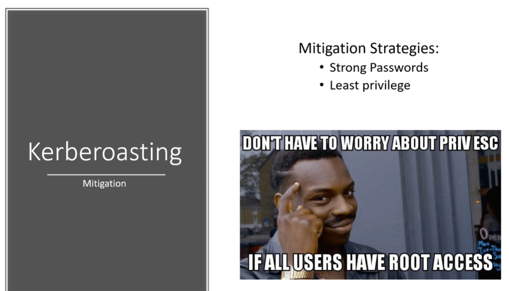

Kerberoastinf is a feature of windows that we are abusing so you can really don't do anything to defend against this except having strong passwords for your service accounts.
Like 30 characters or more the longer the better.